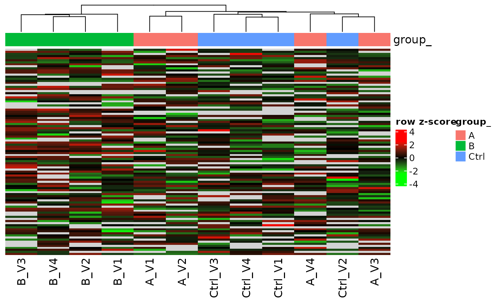
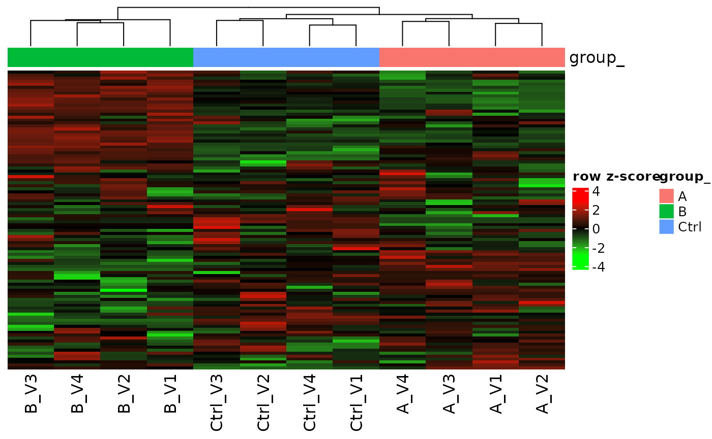
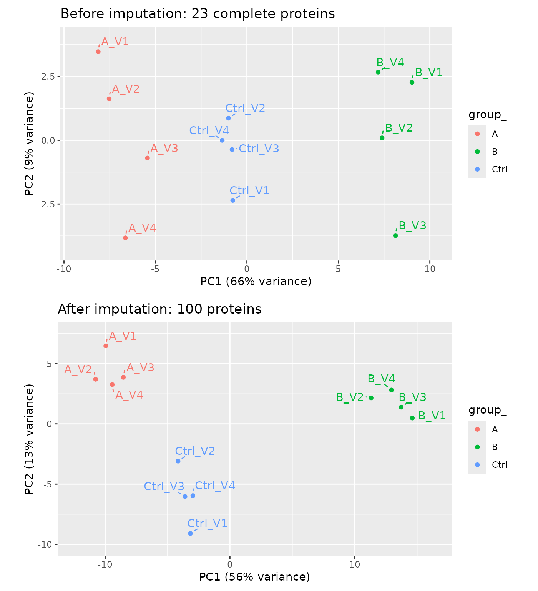

Filling the gaps: model-based imputation for heatmaps and PCA
Witold E. Wolski
2026-10-30
Source:vignettes/articles/ModelBasedImputation.Rmd
ModelBasedImputation.RmdThe problem
Heatmaps, PCA and clustering need a complete data matrix. Label-free data are not complete: a protein is often not observed in some samples, and often not in any sample of one group. While such proteins are frequently below the limit of detection (LOD), complete absence can also reflect true biological on/off expression, which makes them candidates of high biological interest. PCA drops every protein with a missing value, and with it exactly these proteins.
library(prolfqua)
library(ggplot2)
sim <- sim_lfq_data_protein_config(Nprot = 100, weight_missing = 0.5, seed = 1234)
lfq <- LFQData$new(sim$data, sim$config)
wide <- lfq$data_wide(as.matrix = TRUE)$data
empty_group <- lfq$data_long() |>
dplyr::group_by(protein_Id, group_) |>
dplyr::summarise(empty = all(is.na(abundance)), .groups = "drop") |>
dplyr::filter(empty)
c(
proteins = nrow(wide),
complete = sum(stats::complete.cases(wide)),
with_empty_group = dplyr::n_distinct(empty_group$protein_Id)
)## proteins complete with_empty_group
## 100 23 5The proteins with an empty group:
lfq$data_long() |>
dplyr::filter(protein_Id %in% empty_group$protein_Id) |>
dplyr::select(protein_Id, sampleName, abundance) |>
tidyr::pivot_wider(names_from = sampleName, values_from = abundance) |>
knitr::kable(digits = 1)| protein_Id | A_V1 | A_V2 | A_V3 | A_V4 | B_V1 | B_V2 | B_V3 | B_V4 | Ctrl_V1 | Ctrl_V2 | Ctrl_V3 | Ctrl_V4 |
|---|---|---|---|---|---|---|---|---|---|---|---|---|
| cnCfON~9769 | NA | 15.9 | 14.3 | 14.4 | NA | NA | NA | NA | NA | 15.8 | 17.5 | NA |
| DoWup2~8058 | 17.9 | NA | 18.9 | NA | NA | NA | NA | NA | NA | NA | NA | 17 |
| LMQBev~8107 | NA | 16.0 | NA | NA | NA | 15.8 | 16.0 | 15.8 | NA | NA | NA | NA |
| umjHSH~2090 | NA | NA | NA | NA | NA | NA | 15.8 | 16.5 | NA | NA | 17.4 | NA |
| ZHBkZv~0394 | NA | NA | NA | NA | NA | NA | NA | 13.3 | NA | NA | 12.6 | NA |
Fold changes are a separate question
To test for differences you do not need to impute anything yourself:
build_contrast_analysis(method = "lm_impute") also
estimates fold changes for proteins with an empty group, refitting them
at the LOD and borrowing their variance from the other proteins. See Comparing
two groups and Comparing
modelling methods on one dataset. Here we reuse the models of that
fit to fill the data matrix.
Model-based imputation
impute_from_model() fills every missing cell with the
prediction of its protein model and keeps the observed values. The
summary tells which route each protein took:
-
complete: no missing values, nothing to fill -
fitted: the model fitted on the observed values predicts the missing cells from their group -
lod_refit: a protein whose fit failed, typically because a group is empty, is refitted with its missing values set to the LOD and observed values below the LOD raised to it; the empty group gets a value at the LOD
contrasts <- c(AvsC = "group_A - group_Ctrl", BvsC = "group_B - group_Ctrl")
fa <- build_contrast_analysis(lfq, "~ group_", contrasts, method = "lm_impute")
filled <- impute_from_model(fa$model, lfq)
table(filled$summary$route)##
## complete fitted lod_refit
## 23 70 7MissingHelpers estimates the LOD from the data. Groups
in which a protein is observed in only one sample, or in the fewest
samples, are the closest the data comes to the detection limit; the LOD
is the median of their mean intensities. Pass lod to
build_contrast_analysis() to use a LOD of your own.
MissingHelpers$new(lfq$data_long(), lfq$get_config())$get_lod()## [1] 15.97769The proteins with an empty group after imputation; compare with the table above:
filled$lfqdata$data_long() |>
dplyr::filter(protein_Id %in% empty_group$protein_Id) |>
dplyr::select(protein_Id, sampleName, abundance) |>
tidyr::pivot_wider(names_from = sampleName, values_from = abundance) |>
knitr::kable(digits = 1)| protein_Id | A_V1 | A_V2 | A_V3 | A_V4 | B_V1 | B_V2 | B_V3 | B_V4 | Ctrl_V1 | Ctrl_V2 | Ctrl_V3 | Ctrl_V4 |
|---|---|---|---|---|---|---|---|---|---|---|---|---|
| cnCfON~9769 | 16.0 | 15.9 | 14.3 | 14.4 | 16.0 | 16.0 | 16.0 | 16.0 | 16.5 | 15.8 | 17.5 | 16.5 |
| DoWup2~8058 | 17.9 | 17.6 | 18.9 | 17.6 | 16.0 | 16.0 | 16.0 | 16.0 | 16.4 | 16.4 | 16.4 | 17.0 |
| LMQBev~8107 | 16.0 | 16.0 | 16.0 | 16.0 | 16.0 | 15.8 | 16.0 | 15.8 | 16.0 | 16.0 | 16.0 | 16.0 |
| umjHSH~2090 | 16.0 | 16.0 | 16.0 | 16.0 | 16.2 | 16.2 | 15.8 | 16.5 | 16.9 | 16.9 | 17.4 | 16.9 |
| ZHBkZv~0394 | 16.0 | 16.0 | 16.0 | 16.0 | 16.0 | 16.0 | 16.0 | 13.3 | 16.0 | 16.0 | 12.6 | 16.0 |
Heatmap before and after
We cluster the proteins once, on the imputed data, and draw both heatmaps with that row order, so each row shows the same protein before and after.
before <- lfq$data_wide(as.matrix = TRUE)
after <- filled$lfqdata$data_wide(as.matrix = TRUE)
row_order <- rownames(after$data)[hclust(dist(t(scale(t(after$data)))))$order]
ht_before <- plot_heatmap(
before$data, before$annotation, lfq$factor_keys(), lfq$sample_name(),
na_fraction = 1, row_order = row_order
)
ht_before
Before imputation: missing cells are grey.
ht_after <- plot_heatmap(
after$data, after$annotation, lfq$factor_keys(), lfq$sample_name(),
na_fraction = 1, row_order = row_order
)
ht_after
After imputation: every cell holds a value.
PCA before and after
Before imputation PCA can only use the proteins without missing values; after imputation it uses all proteins.
n_complete <- sum(filled$summary$route == "complete")
gridExtra::grid.arrange(
lfq$get_Plotter()$pca() +
ggtitle(paste0("Before imputation: ", n_complete, " complete proteins")),
filled$lfqdata$get_Plotter()$pca() +
ggtitle(paste0("After imputation: ", nrow(filled$summary), " proteins")),
ncol = 1
)
PCA before (top) and after (bottom) imputation.
Caveats
After imputation the groups separate more cleanly, in the heatmap and
in the PCA. Part of that is circular: each filled value is the model’s
estimate for its group, so imputation adds the group structure of the
model to the data. The filled values also carry no noise. Use the filled
matrix to look at the data; for tests use the contrasts of
lm_impute, which account for the imputation.
Session Info
## R version 4.5.2 (2025-10-31)
## Platform: x86_64-pc-linux-gnu
## Running under: Ubuntu 26.04.1 LTS
##
## Matrix products: default
## BLAS: /usr/lib/x86_64-linux-gnu/openblas-pthread/libblas.so.3
## LAPACK: /usr/lib/x86_64-linux-gnu/openblas-pthread/libopenblasp-r0.3.32.so; LAPACK version 3.12.0
##
## locale:
## [1] LC_CTYPE=C.UTF-8 LC_NUMERIC=C LC_TIME=C.UTF-8
## [4] LC_COLLATE=C.UTF-8 LC_MONETARY=C.UTF-8 LC_MESSAGES=C.UTF-8
## [7] LC_PAPER=C.UTF-8 LC_NAME=C LC_ADDRESS=C
## [10] LC_TELEPHONE=C LC_MEASUREMENT=C.UTF-8 LC_IDENTIFICATION=C
##
## time zone: UTC
## tzcode source: system (glibc)
##
## attached base packages:
## [1] stats graphics grDevices utils datasets methods base
##
## other attached packages:
## [1] ggplot2_4.0.3 prolfqua_1.9.0
##
## loaded via a namespace (and not attached):
## [1] Rdpack_2.6.6 gridExtra_2.3.1 rlang_1.3.0
## [4] magrittr_2.0.5 clue_0.3-68 GetoptLong_1.1.1
## [7] otel_0.2.0 matrixStats_1.5.0 compiler_4.5.2
## [10] mgcv_1.9-3 png_0.1-9 systemfonts_1.3.2
## [13] vctrs_0.7.3 pkgconfig_2.0.3 shape_1.4.6.1
## [16] crayon_1.5.3 fastmap_1.2.0 backports_1.5.1
## [19] labeling_0.4.3 rmarkdown_2.32 nloptr_2.2.1
## [22] ragg_1.5.2 UpSetR_1.4.1 purrr_1.2.2
## [25] xfun_0.62 glmnet_5.2 jomo_2.7-6
## [28] logistf_1.26.1 cachem_1.1.0 jsonlite_2.0.0
## [31] progress_1.2.3 pan_2.0 broom_1.0.13
## [34] parallel_4.5.2 prettyunits_1.2.0 cluster_2.1.8.1
## [37] R6_2.6.1 bslib_0.12.0 stringi_1.8.9
## [40] RColorBrewer_1.1-3 limma_3.66.0 boot_1.3-32
## [43] rpart_4.1.24 jquerylib_0.1.4 Rcpp_1.1.2
## [46] iterators_1.0.14 knitr_1.52 IRanges_2.44.0
## [49] Matrix_1.7-4 splines_4.5.2 nnet_7.3-20
## [52] tidyselect_1.2.1 yaml_2.3.12 doParallel_1.0.17
## [55] codetools_0.2-20 lattice_0.22-7 tibble_3.3.1
## [58] plyr_1.8.9 withr_3.0.3 S7_0.2.2
## [61] evaluate_1.0.5 desc_1.4.3 survival_3.8-3
## [64] circlize_0.4.18 pillar_1.11.1 mice_3.19.0
## [67] foreach_1.5.2 stats4_4.5.2 reformulas_0.4.4
## [70] plotly_4.12.1 generics_0.1.4 S4Vectors_0.48.1
## [73] hms_1.1.4 scales_1.4.0 minqa_1.2.8
## [76] glue_1.8.1 tools_4.5.2 data.table_1.18.6.1
## [79] lme4_2.1-0 forcats_1.0.1 fs_2.1.0
## [82] grid_4.5.2 tidyr_1.3.2 rbibutils_2.4.1
## [85] colorspace_2.1-4 nlme_3.1-168 formula.tools_1.7.1
## [88] cli_3.6.6 textshaping_1.0.5 viridisLite_0.4.3
## [91] ComplexHeatmap_2.26.1 dplyr_1.2.1 gtable_0.3.6
## [94] sass_0.4.10 digest_0.6.39 operator.tools_1.6.3.1
## [97] BiocGenerics_0.56.0 ggrepel_0.9.8 rjson_0.2.23
## [100] htmlwidgets_1.6.4 farver_2.1.2 htmltools_0.5.9
## [103] pkgdown_2.2.1 lifecycle_1.0.5 httr_1.4.9
## [106] GlobalOptions_0.1.4 mitml_0.4-5 statmod_1.5.2
## [109] MASS_7.3-65